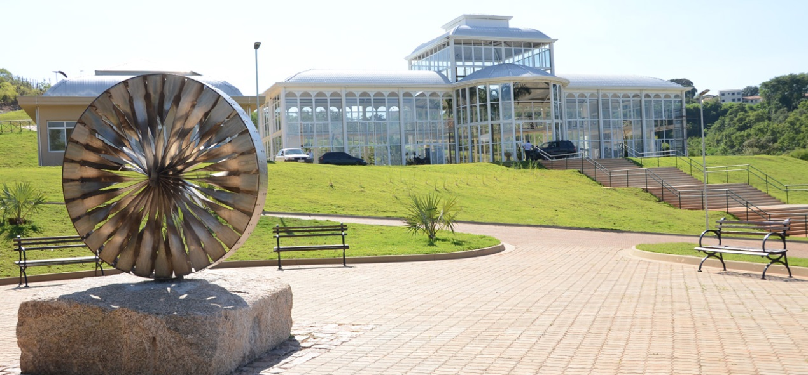
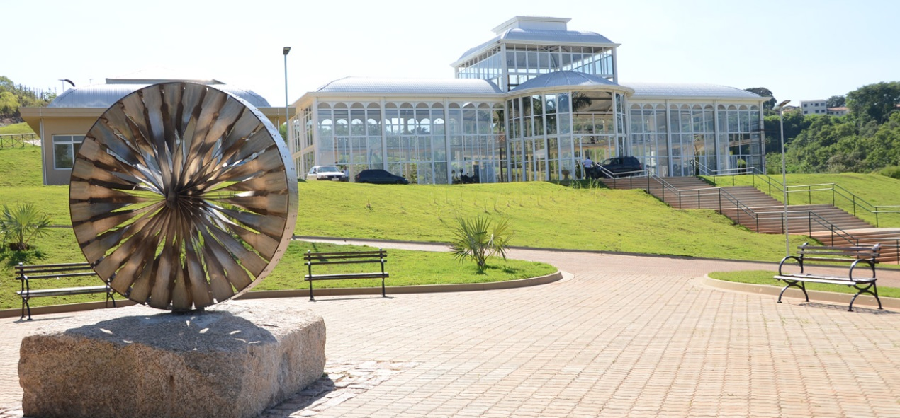
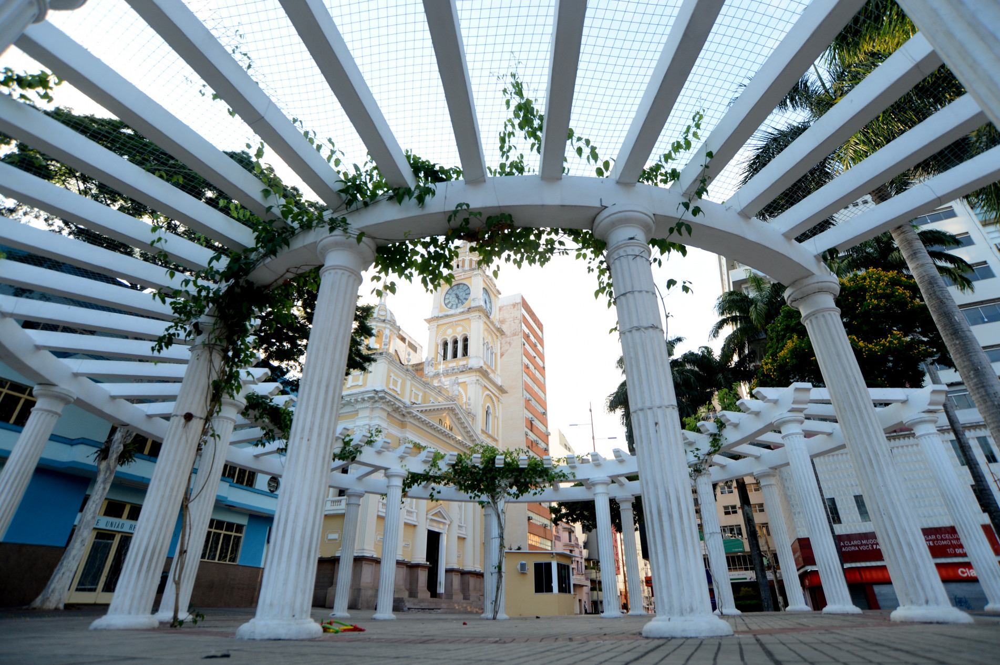
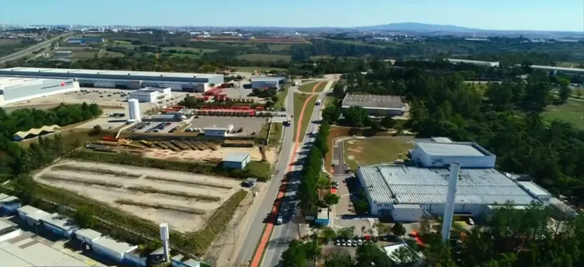

![Vista aérea da cidade de Sorocaba, Brasil, sob um céu parcialmente nublado com tons de final de tarde no horizonte. A imagem abrange uma vasta extensão urbana, mostrando uma mistura de casas de baixa altura com telhados avermelhados em primeiro plano, que gradualmente dão lugar a uma área com uma alta concentração de edifícios residenciais e comerciais mais altos. Espaços verdes pontuam a paisagem, e ao fundo, a cidade se estende até encontrar áreas mais afastadas e horizontes levemente montanhosos. A iluminação suave do sol poente confere um brilho dourado a alguns edifícios e nuvens.](../img/sorocaba/visao_aerea.jpg "Sorocaba")
Introdução e Cultura
Sorocaba é uma cidade do interior de São Paulo com cerca de 700 mil habitantes, reconhecida pelo planejamento urbano, desenvolvimento econômico e qualidade de vida. A cidade combina infraestrutura moderna, áreas verdes, serviços públicos eficientes e integração entre tradição histórica e inovação tecnológica. Sorocaba é referência em educação, saúde e sustentabilidade, consolidando-se como um polo inteligente no estado.
O panorama cultural é amplo e diversificado, contando com museus, teatros, centros culturais, bibliotecas e espaços de convivência que promovem eventos artísticos, musicais e literários. Festivais culturais e exposições fortalecem a identidade local e incentivam a participação comunitária, aproximando a população de experiências culturais enriquecedoras.
O urbanismo inteligente integra áreas residenciais, comerciais e de lazer, com parques, ciclovias, praças e jardins que promovem lazer, esportes e convivência social. Sorocaba investe em tecnologia e inovação, possuindo centros de pesquisa, universidades e incubadoras que conectam educação, empreendedorismo e desenvolvimento econômico, tornando a cidade um exemplo de cidade inteligente e sustentável.
 

Turismo, Passeios e Gastronomia
Entre os principais pontos turísticos estão o Parque Zoológico Municipal, o Parque Natural da Água Vermelha, o Centro Histórico e o Teatro Municipal. Sorocaba oferece passeios gratuitos em parques, praças e áreas de lazer, além de eventos culturais, feiras e exposições que estimulam lazer e entretenimento. Caminhadas, atividades ao ar livre e visitas guiadas fortalecem a integração social e o contato com a natureza.

A gastronomia local é variada, incluindo restaurantes de cozinha brasileira, internacional, cafés, bares e confeitarias. Feiras de produtos regionais e eventos gastronômicos promovem ingredientes locais e experiências culinárias únicas, fortalecendo o turismo e a economia criativa. A cidade combina tradição culinária com inovação, valorizando sabores regionais e experiências gastronômicas diversificadas.
Festivais gastronômicos e eventos culturais promovem interação social, lazer e valorização da arte e da culinária local, consolidando Sorocaba como destino cultural, turístico e gastronômico no interior paulista.
Economia, Inovação e Curiosidades
A economia de Sorocaba é diversificada, com destaque para indústria, comércio, serviços e tecnologia. A cidade investe em inovação, planejamento urbano e infraestrutura moderna, atraindo empresas e fortalecendo o desenvolvimento econômico sustentável, com foco em qualidade de vida e sustentabilidade ambiental.

Projetos de inovação incluem centros de pesquisa, incubadoras de empresas, urbanismo inteligente e políticas públicas voltadas à sustentabilidade. A cidade investe em educação, tecnologia e empreendedorismo, promovendo integração entre população, governo e setor privado, consolidando Sorocaba como referência em desenvolvimento urbano, inovação e qualidade de vida.
Entre as curiosidades, Sorocaba é conhecida por sediar importantes eventos culturais e feiras industriais, além de possuir um dos mais bem planejados sistemas urbanos do interior paulista. A combinação de tradição, modernidade e inovação faz da cidade uma referência em organização e qualidade de vida.